第二性
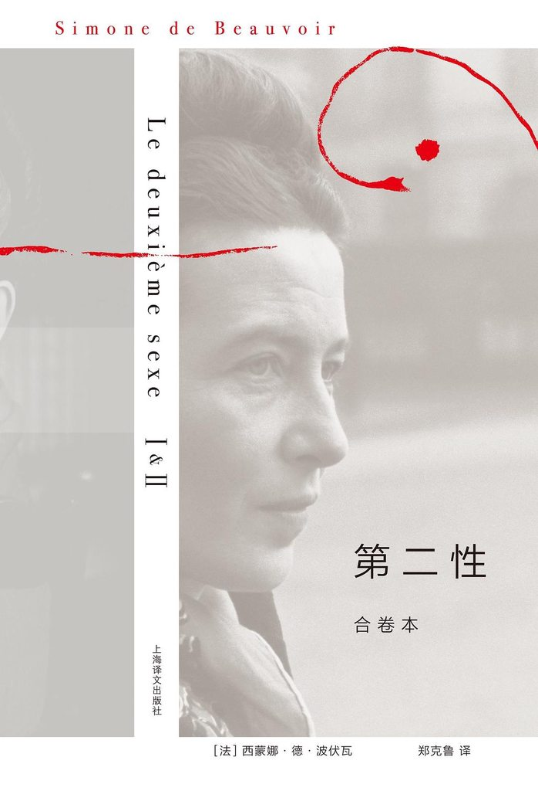
第二性 读后感
圆圈正义
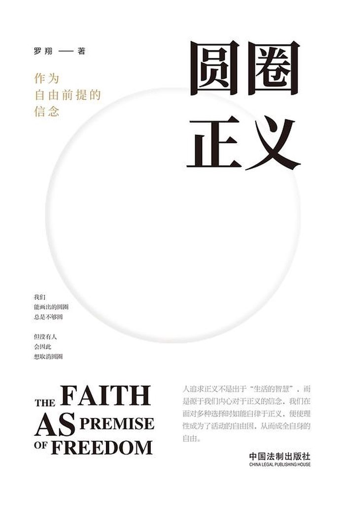
2023-04-30-circle-justice-reading-notes
圆圈正义 (B站累计点击量超1000万，人称“刑法小王子”的罗翔教授全新力作，人追求正义不是出于“生活的智慧”，而是源于内心对于正义的信念) - 罗翔 (Highlight: 23; Note: 0)
───────────────
◆ 版权信息
▪ 理查德·巴克斯特说: 我们时常妒忌比我们地位高的人,藐视地位不及我们的人; 垂涎别人的名望、财富, 或者傲慢、冷酷地看待别人的贫寒窘迫。看到外形姣好的人, 则诱发我们的情欲; 看见有残疾的人, 就引发我们的鄙夷之心……我们自己才是自己最大的网罗。我们永远没有自我想象中那么高尚。
◆ 法治的妥协
▪ 法治必须约束权力 , 保障自由 。通俗地说 , 国家只拥有法律所规定的权力 , 而法律所不禁止的则是公民自由驰骋之地 。当权力有其固定的边界时 , 民众才能享有法律所赋予的免于恐惧的自由 。如若法外另有民众无法知悉内部规则 , 人们也就无法形成合理的预期 , 不可避免地会陷入未知的恐惧
◆ 燕园旧训 薪火相传
▪ 唯有真理的光照 , 才能学会谦卑 , 走出自我的偏狭 , 从而自由而不放纵 , 独立而不狂狷 , 尽责而不懈怠 。
▪ 真正的自由是做正确事情的自由 , 随意吸毒不叫自由 ,可以控制自己不去沾染毒品才是自由 。任意更换性伴侣 , 始乱终弃不是自由 , 可以约束自己的欲望才叫自由 。百花争妍 , 但仍能忠于命定的那朵玫瑰 , 才是真正的性自由 。
◆ 何谓榜样
▪ 如果你认为是你自己的才干 、智慧让你获得了成功 , 那你注定不会幸福 。因为这样的你在成功时 , 你会目空一切 、狂妄自大 , 在得意中自我毁灭 ; 在失败时 , 你会自怨自艾 、愤怒嫉妒 , 甚至自寻短见 。
◆ 狂人罗大拿的故事
▪ 有人曾问罗素 : “人生的意义为何 ?”他觉得这个问题毫无意义 , 非常无聊 。在他的自传中 , 他认为自己之所以活着 , 有三个动力 :对爱情的渴望 , 对知识的追求 , 对人类苦难不可遏制的同情心
◆ 师生之道
▪ 不要轻易去相信人性 , 因为人性就像柏拉图所说 , 好比一辆两匹马拉的战车 , 每匹马却朝着不同的方向奔跑 。所以我们需要光明的牵引 , 行在光中 , 在阳光的照耀下 , 让人性的黑暗无处可藏 。
◆ 不要轻易向他人抡起道德的杀威棒
▪ 人很容易唱高调 , 因为这不用付出任何代价 , 反而可以沽名钓誉 , 掩盖自己的毛病 , 何乐不为 ?但是 , 动辄站在道德制高点教训他人的人 , 往往自己是败类中的败类 , 越高调往往越败坏 。只要对历史有基本的熟悉 ,
◆ 道德谴责的打开方式
▪ 那些立场鲜明 、非此即彼的口号式论说最容易获得民心 , 但这种单极化的思维在人类历史上却带来了无数浩劫 。因此 , 法律的训练让我对任何口号都心存警惕 。
◆ 大刀砍向同胞的第一步是对异族的仇恨
▪ 到了大学 , 我们组织湖南老乡会 。老乡们聚在一起 , 不断自夸身为湖南人的骄傲 , 批评外省人的粗鄙 。直到有一天 , 老乡会居然没有叫我 , 我非常失落 。后来才知道原来他们开的是长沙老乡会 , 我不是长沙人 , 所以没有资格参加 。但是一位长沙同学居然也没有受邀 , 我感到非常奇怪 。后来他郁闷地告诉我 , “他们开的是长沙市的老乡会 , 我是长沙县的 , 所以没有资格 。”
◆ 身负权力 各自珍重
▪ 罗尔斯在 《正义论 》中提醒我们 , 如果人们被一块 “无知之幕 ”遮盖 , 这块幕布让人们暂时不知道自己将处于何种阶层 、性别或民族 , 也不知自己的教育水平 , 身体健康还是病弱 ,家境贫穷还是富裕 , 那么人们会选择一种什么样的社会呢 ?
◆ 无论多么伟大 终有一天谢幕
▪ 帕斯卡尔说 : “我们一切不幸的理由就在于我们人类脆弱得要命的那种状况的天然不幸 ; 它又是如此之可悲 , 以至于当我们仔细地想到它时 , 竟没有任何东西可以安慰我们 。” [1] 每个人都是向死而生的一生 , 在这个生命旅途中 , 我们不时会经历苦难 , 我们也要时常对抗自己内心的邪恶 , 终有一天 , 我们会走向此生的终点 。
◆ 爱要常觉亏欠 客要一味款待
▪ 仔细想想 , 其实我和卢梭一样 , 爱抽象的人类胜过于具体的人 。因为抽象的人类如此可爱 , 而具体的人如此麻烦 。想象中的人类越可爱 , 越是觉得身边之人乏味恶心 。对抽象的人类的爱是无须付出代价的 , 但对具体的人的爱则总是要投入大量的时间和精力 。然而 , 真正的爱一定要是付出代价的 , 牺牲越大 , 爱心也就越大 。无须付出代价的爱不是为了欺骗自己 , 就是为了欺骗他人 。
◆ 致法学新人的第一封信: 关于读书
▪ 功利性读书会让人自高自大 , 孤标傲世 。知识经常会让人骄傲 , 给人带来智力上的优越感 , 让你瞧不起人 , 无法与人建立正常的人际关系 。
◆ 致法学新人的第二封信: 与人和睦相处
▪ 我们以为贫穷就是饥饿 、衣不蔽体和没有房屋 , 然而最大的贫穷却是不被需要 、没有爱和不被关心 。
▪ 很多人为了寻找爱情 , 在不同的情人中周旋探索 , 最后却是越来越觉得孤独 。原因就在于 , 自恋的爱永远不能长久 , 任何一个人都无法达到你对他的全部预设 。
◆ 致法学新人的第三封信: 与德相随
▪ 最后 , 我想以马丁 ·路德 ·金的话结束这封冗长的信件 。他说 : 我们必须接受失望 , 因为失望是有限的 , 但我们永远不能放弃希望 , 因为希望是无限的 。
◆ 我们一生都走在回家的路上
▪ 当你回到家乡 , 你会发现它远没有你想象中那么美好 , 无数曾经魂牵梦萦的旧地 , 在你重游之时 , 你会发现也不过如此 , 美好的感觉不过自欺欺人 。回家本来是想放松休息 、享受亲情 , 无 奈各种人情往来 、聚会应酬 , 各种炫耀攀比 , 甚至与亲人的矛盾冲突 , 都会让你大失所望 。
◆ 今天是艰难的, 但也是精彩的
▪ 寄希望于明天会更好只会让希望一次一次地破灭 , 从而走向彻底的虚无主义 。我们无法控制明天 , 我们只能努力地活好今天 。人越专注于明天 , 就越害怕明天 , 以致对现在感到困惑和失去动力
◆ 为了告别的聚会
▪ 生活中充满了类似的矛盾 , 以至于荒诞 。为了分手的恋爱 , 为了仇恨的友谊 , 为了痛苦的欢愉 ,不一而足 。
▪ 我们登上并非我们所选择的舞台 , 演绎并非我们所选择的剧本 。”对于现代人而言 ,这种哲学简直愚昧 。我们为什么不能按照自己所选择的剧本来生活 , 为什么要接受给定的剧本 ?
▪ 有个人在海边 , 看到世界是那么美好 , 落日辉煌 , 他感动得流下了第一滴泪 。接着他被自己流出的第一泪感动 , 流出了第二滴眼泪 。他感动于自己的感 动 ——我居然如此与众不凡 , 远超庸俗的众人 , 可以因落日余晖而感动 。我们很容易陷入第二滴眼泪的试探 。虚荣会再一次将我们带进荒诞的深渊 。
局外人
异乡人 - [法] 阿尔贝·加缪 (Highlight: 5; Note: 0)
───────────────
◆ 一
▪ 今天，妈妈死了。也许是昨天，我不知道。
◆ 四
▪ 她穿着我的睡衣，卷起了袖子。她笑的时候，我的心里又痒痒了。过了一会儿，她问我爱不爱她。我回答说这种话毫无意义，我好像不爱她。她好像很难过。可是在做饭的时候，她又无缘无故地笑了起来，笑得我又吻了她。就在这时，我们听见莱蒙屋里打起来了。
◆ 二
▪ 我被捕的那一天，他们先把我关在一间已经有好几个囚犯的牢房里，其中大部分是阿拉伯人。他们看见我都笑了。然后他们问我犯了什么事儿。我说我杀了一个阿拉伯人，他们就都不说话了。
▪ 在我被监禁的开始，最使我感到难以忍受的是，我还常有一些自由人的念头。
◆ 五
▪ 为了把一切都做得完善，为了使我感到不那么孤独，我还希望处决我的那一天有很多人来观看，希望他们对我报以仇恨的喊叫
另一个，同一个
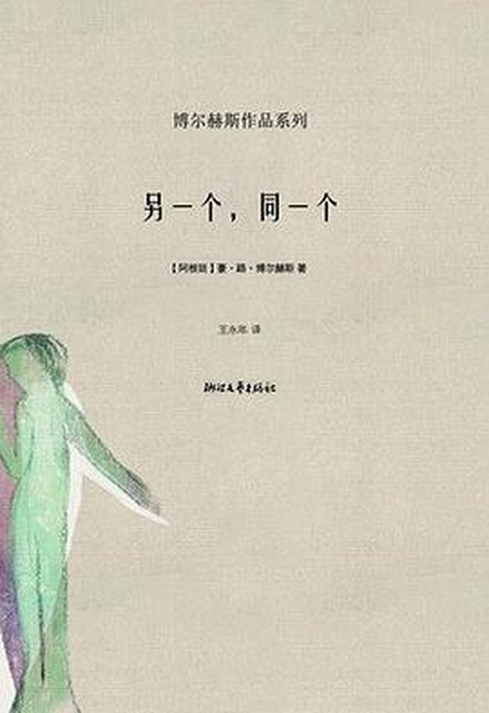
《我用什么才能留住你？》 （What can I hold you with?）中的经典语录和名句：
—— 我用什么才能留住你？…
—— 我给你瘦落的街道、绝望的落日、荒郊的月亮。
—— 我给你一个久久地望著孤月的人的悲哀。
—— 我给你我的书中所能蘊含的一切悟力，以及我生活中所能有的男子气概和幽默。
—— 我给你一个从未有过信仰的人的忠诚。
—— 我给你我设法保全的我自己的核心——不營字造句，不和梦交易，不被时間、欢乐和逆境触动的核心。
—— 我给你早在你出生前多年的一个傍晚看到的一朵黃玫瑰的记忆。
—— 我给你关于你生命的诠释，关于你自己的理论，你的真实而惊人的存在。
—— 我给你我的寂寞、我的黑暗、我心的饥渴；我试图用困惑、危险、失敗來打动你。
雪国
国境の長いトンネルを抜けると雪国であった。夜の底が白くなった。信号所に汽車が止まった。
穿过县界长长的隧道，便是雪国。夜空下一片白茫茫。火车在信号所前停了下来。
人们期待的爱情， 是一片雪白的世界，除了双方之外没有别人的存在，最多再有一个第三者😀，一直默默期待着与彼此见面、交谈、分别、再见或者再也不见。
雪国描写的是一段美好的嫖妓经历， 这又引发了我的哲学思考：买来的爱情， 算是爱情吗？这取决于你认为爱情是追逐的过程还是结果， 如果是后者， 嫖客才是最适合你的身份。
译者后记：
对于川端康成来说， 爱情是一个永远不得圆满的痛苦经历， 只有死亡菜能解脱， 所以川端康成在一九七二年四月十六日自杀了。
娜嘉
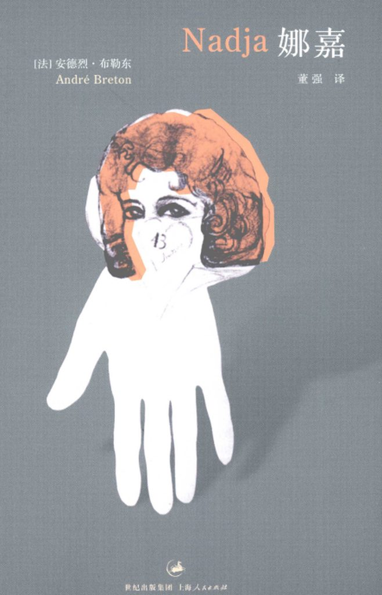
大部分是不幸的人，还有一些是愚蠢的傻瓜，正如塞里斯人一样
我问了她一个概括所有问题的问题，你是谁？她毫不迟疑的回答，我是游荡的灵魂
美是痉挛的，否则就没有美
程序员修炼之道：从小工到专家
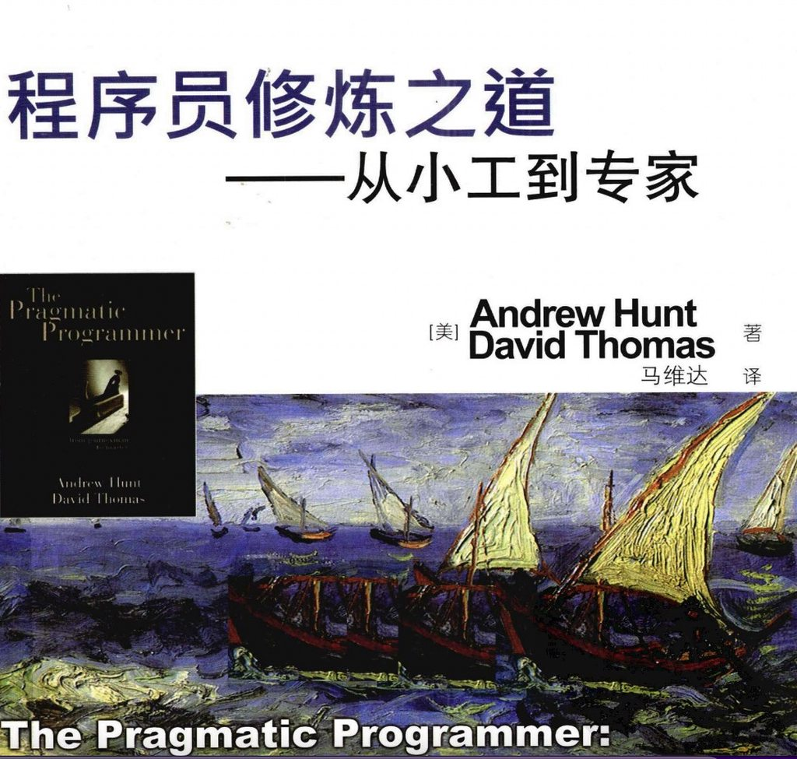
曳光弹: 不知道晚上的机枪有没有打中目标, 所以在子弹里加上发光的子弹, 快速获得集中与否的反馈, 因此可以立刻调整射击方向.
Tech Lead 之路
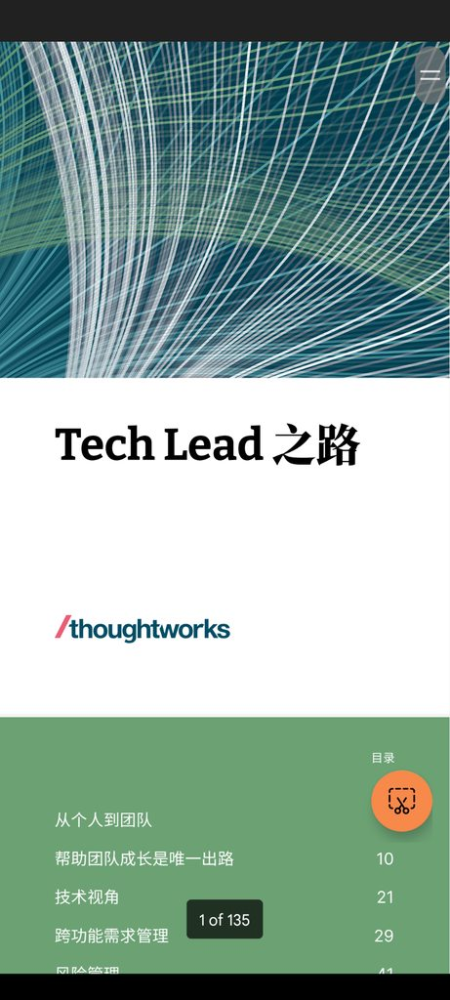
ThoughtWorks 出品的一本小书
是一些技术管理文章的合集
讲的都是一些老生常谈的问题，没有什么新的观点
1984
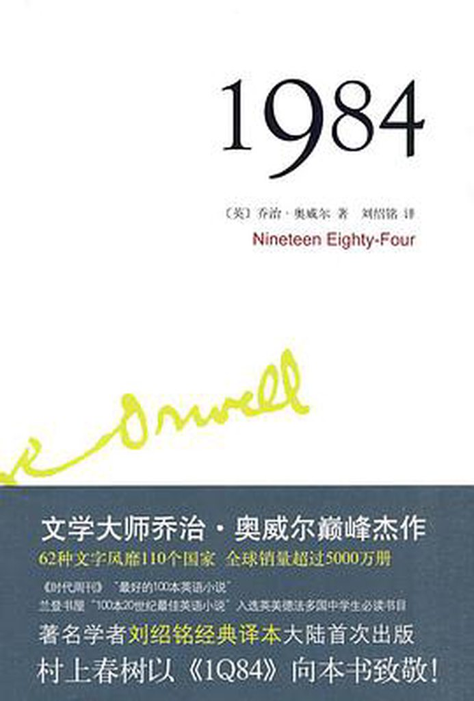
她身之欲
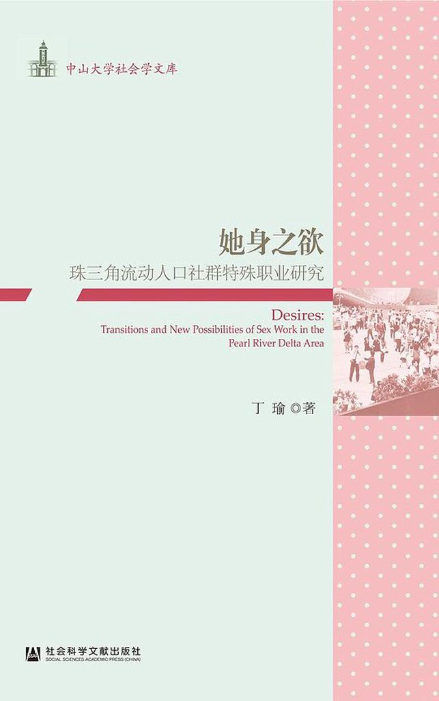
这本书的写作水平其实很一般 总体就相当于写了一些都市底层姐妹的爱情故事， 也不要期待能从这本书看到很深刻的社会问题和很独到的解读 ，大概相当于故事会水平。 可能大多数人觉得这本书厉害，就是出于猎奇的心态而已。
恶之花 巴黎的忧郁
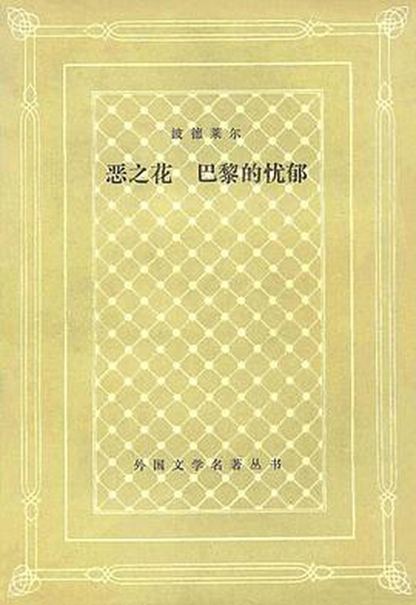
给一位交臂而过的妇女
大街在我的周围震耳欲聋地喧嚷。
走过一位穿重孝、显出严峻的哀愁、
瘦长苗条的妇女，用一只美丽的手
摇摇地撩起她那饰着花边的裙裳；
轻捷而高贵，露出宛如雕像的小腿。
从她那像孕育着风暴的铅色天空
一样的眼中，我像狂妄者浑身颤动，
畅饮销魂的欢乐和那迷人的优美。
电光一闪……随后是黑夜！——用你的一瞥
突然使我如获重生的、消逝的丽人，
难道除了在来世，就不能再见到你？
去了！远了！太迟了！也许永远不可能！
因为，今后的我们，彼此都行踪不明，
尽管你已经知道我曾经对你钟情！
深渊
帕斯卡有个深渊，如影随形，变化多端，
唉，一切皆是深渊—行动、欲望、梦魇,
语言！在我竖起的汗毛上，
恐惧多次像风掠过的通感。
高音，低音，到处都是，大海，沙滩，
死寂，空间，令人厌倦又引人迷恋……
在我无数不眠的深夜，上帝用灵巧的手指
刻画出多变而无休止的梦魇。
我恐惧睡眠，如同人们恐惧巨大的牢监，
那里模糊可怖，谁也没有出路；
透过所有的窗子，我只看到了无限。
我那精神，时常感到阵阵晕眩，
真嫉妒凡庸的无感，
啊！我如何永远也走不到数与存在的边缘！
某夜,我躺在一个犹太丑女身旁
某夜,我躺在一个犹太丑女身旁,
就像一具尸体靠紧另一具尸体,
在这卖身女的身旁,
我不由想起 我求之不得的多愁的美貌女郎。
我想起了她那种天生的威严,
她的眼光具备无限的活力和优美,
她的头发成为香气氤氲的头盔,
想起来就使我的爱情死灰复燃。
因为,我真会狂吻你高贵的肉体,
从你凉爽的脚吻到黑色的发丝,
打开你那深情厚爱的无限宝库,
如果在某个夜晚,哦,冷酷的女王,
只要你能自然而然地流出泪珠,
使你那冷冰冰的眸子暗淡无光。
Phenomenology the basic
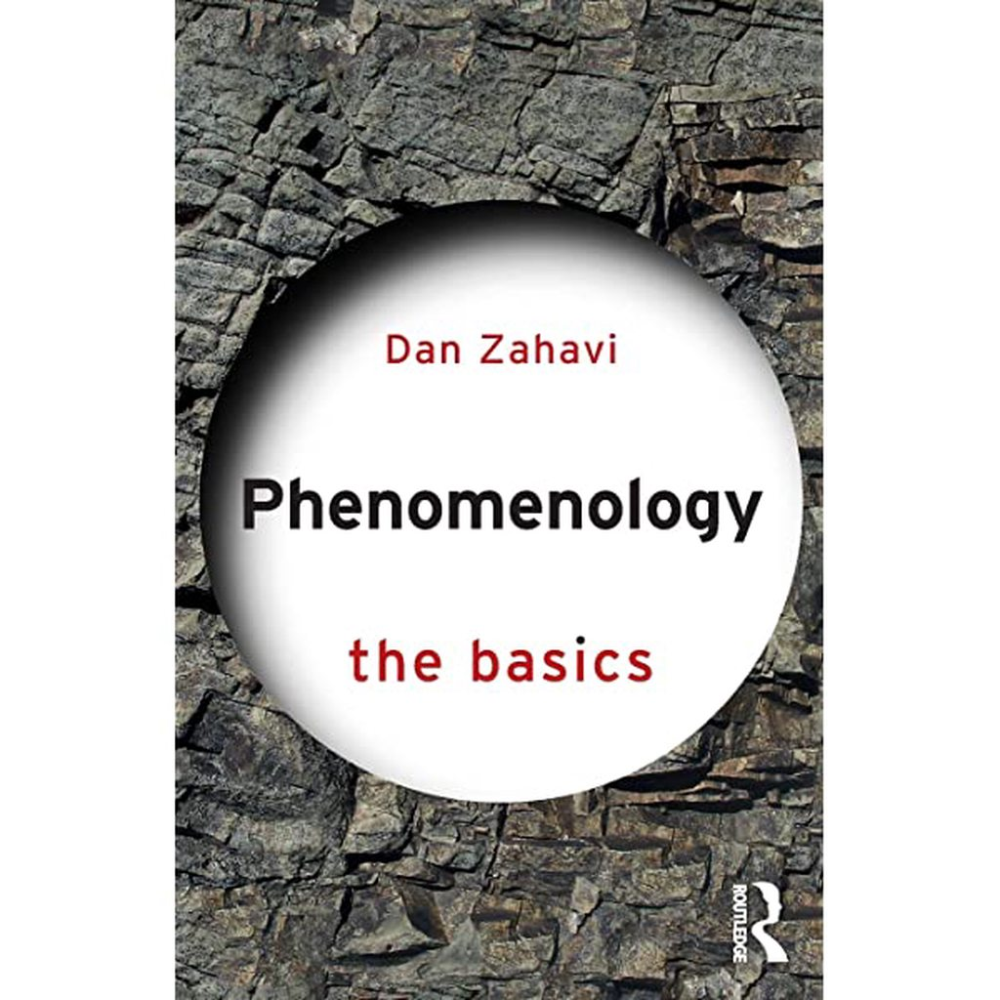
书写的很不错，但是我只能说读英语的哲学书真的是太折磨了，还是自己英语太菜了
性经验史（3卷本） - 米歇尔·福柯

性经验史（3卷本） - 米歇尔·福柯 (Highlight: 39; Note: 0)
───────────────
◆ 第二章 压抑假说
▪ 现代社会的特点不是把性隐藏起来，而是在强调性是“秘密”的同时，热衷于一直谈论性。
◆ 第四章 性经验的机制
▪ 正是这一“司法的—推理的”权力概念决定了压抑主题和法律是构成欲望的要素的理论。换言之，根据本能压抑做出的分析和根据欲望法律做出的分析的不同之处，一定在于它们是怎样看待冲动的本能和动力，而不是在于它们看待权力的方式。它们各自诉诸一种共同的权力表现，后者根据人们对它的用法和它相对于欲望的位置，导致了两种相反的结果：若是权力是外在地控制了欲望，那么就导出了“解放”欲望的承诺；若是权力是欲望的构成要素，那么就会得出你已经落入陷阱之中的结论。
▪ 1．权力不是获得的、取得的或分享的某个东西，也不是我们保护或回避的某个东西，它从数不清的角度出发在各种不平等的和变动的关系的相互作用中运作着
▪ 2．权力关系并不外在于其他形式的关系（经济过程、认识关系和性关系），相反，它们内在于其他形式的关系之中。它们是在此产生出来的差别、不平等和不平衡的直接结果。它们彼此是这些差异化的内在条件。权力关系也不是高高在上的结构，只有简单的禁止或继续的作用。相反，它们在运作时有着一种直接生产的作用。
▪ 3．权力来自下层。这就是说权力关系的原则和普遍基础不是统治者与被统治者之间的整体的二元对立。这种二元对立是自上而下发生影响的，愈到社会下层，限制愈多。相反，我们必须认为在生产设备、家庭、纪律组织、机构之中形成和运作的力量的多样关系极大地支持了贯穿于整个社会的对立。它们形成了一条贯穿和连接各个局部冲突的一般力量轨迹。当然，它们又会反过来重新分配、排列、同化、整理和混合这一系列的力量关系。各种规模庞大的统治都是得到所有这些剧烈冲突持续支持的霸权结果。
▪ 4．权力关系既是有意向性的，又是非主观的。
▪ 权力的合理性是各种策略运用的合理性，这些策略在它们运作的有限层面上常常是非常清楚的（权力的局部运作是厚颜无耻的），它们相互连接、相互激发和相互推广，它们还在别处发现了对它们的支持和它们的条件，最后勾勒出整体的机制：在此，推理极为清晰，对象可以辨认；然而，不再有人理解它们，也不再有人能够说出它们：这就是各种宏大的匿名策略的隐含特征。这些匿名策略几乎是默不作声的，它们协调着各种饶舌的策略，而且这些饶舌策略的“发明者”或负责人经常是不虚伪的。
▪ 5．哪里有权力，哪里就有抵制。
▪ 总之，不要把一切针对性的微不足道的暴力、一切盯住性的困惑的目光和一切妨碍可能认识性的掩饰手段纳入巨大权力的统一形式之中，而是把性话语的大量生产纳入多样的和变动的权力关系的领域中。
▪ 联姻机制的主要目标就是重新产生性关系的互动，维护管理性关系的法律；而性经验的机制则相反，它永远在扩张各种控制的范围与形式。对于前者来说，它关心的主题是身份明确的伴侣之间的性关系；而对后者来说，它关心的主题却是身体的感受、快感的质量、十分微妙的或不易察觉的印象的本性。
◆ 第五章 死亡的权利和管理生命的权力
▪ 在古典时代里建立起来的这一伟大的双面技术——既是解剖学的，又是生物学的；既是个别化的，又是专门化的；既面向肉体的性能，又关注生命的过程——表明权力的最高功能从此不再是杀戮，而是从头到尾地控制生命。
▪ 一方面，性属于身体的规训：各种力量的建立、强化和分布，各种能量的调整和节制。另一方面，它属于人口的调节，它引起的所有后果都是关乎全局的，于是同时被整合到这两个方面之中。
◆ 第一章 对快感的道德质疑
▪ 西莫尼德在“饮、食、睡眠与性爱”方面给希爱罗提出这样的建议：这些“享乐是一切动物共有的”，而喜爱荣誉与赞颂却是人特有的；而且这种爱好让人可以忍受诸如贫困之类的危险。(74)据色诺芬说，这还是阿格西劳斯面对“控制了许多男人”的快感时的做法；他认为“领袖与普通人的区别不应该在于他的软弱，而在于他的忍耐力”
◆ 第三章 家政学
▪ 一种解释认为，对于古典时代的希腊人来说，夫妻性关系的惟一作用就是把两个家庭、两种策略和两笔财产连结起来，惟一的目的就是生育后代。《驳斥尼埃拉》的格言十分清楚地区分了情妇、小妾和妻子在男人生活中应当起的不同作用，它有时被解释为一种包含着三种专门功能的三分体：一方面是性快感，另一方面是日常生活，最后，妻子只在于传宗接代。
▪ 因此，我们可以看出，约束男人不去寻求婚外性伴侣的原则有着与对女人类似的约束的原则不同的本质。对于女人来说，只要她受丈夫的支配，这种约束就是强加于她的。对于丈夫来说，因为他行使权力，因为他必须在行使这一权力时做出控制自我的样子来，所以他必须限制自己的性选择。
▪ 婚姻关系就带有原始不对等的特点——男人是替自己做主的，而女方则是由她的家庭为她做主的——和双重目的（家政和孩子）的特点。
▪ 因此，在这种婚姻生活的伦理中，要求丈夫做到的“忠诚”不同于婚姻强加给妻子的性专一。它关系到维护妻子的地位、她的各种特权和她对其他女人的优势。而且，如果它假定了某种男女之间的行为的相互性，那么这是因为男性的忠诚对应的不是妻子良好的性行为（这总是假设），而是她知道怎样在家中表现自己和管理家务的方式。因此，这是一种相互性，但却是一种必不可少的不对等，因为这两种相互依赖的行为不是以相同的要求为基础的，而且也不遵循相同的原则。丈夫的节制属于一种有关管理、自我管理和管理妻子的艺术；他必须既管束又尊重妻子，因为她对丈夫来说是一个顺从的家庭主妇。
▪ 这种把性活动限制在婚姻之中的双重义务牵涉到城邦的安定、它的公共道德和优生条件，而与属于夫妻对等关系的那些相互义务没有关系。
▪ 在古典时代的希腊，道德家们规定婚姻生活中的双方都要节制；但是双方的节制属于两种不同的与自我发生关系的方式。妻子的美德构成了一种顺从行为的相关物和保证；男方的节制则属于一种自我约束的统治伦理。
◆ 第四章 性爱论
▪ 它们确定了“求爱者”（eraste）与“被爱者”（eromene）的角色。一个处于主动的地位，他追求对方，这给予他各种权利与责任：他需要表现出热情，还要节制它；他要送上礼物，提供服务；他要向被爱者履行各种职责；而且，所有这些让他有充分理由期待公正的回报。另一个是被爱和被奉承的人，他必须避免让对方轻易得手；他还必须在没有证明他的伴侣的价值之前，避免接受太多各式各样的礼物，不让自己受利益的诱惑而轻率地答应对方。他也必须对求爱者为他所做的一切表示感谢。
▪ 为了弄清快感的享用是怎样在对男童之爱的反思中被质疑的，我们应该记住一个不是希腊文化特有的、但却是其中极为重要的并且在各种道德评价中行使着一种支配权力的原则。它就是性关系与社会关系之间的同构原则。因此，我们应该知道，性关系——总是被人从典型的插入行为和区分主动与被动的两极性的角度来看待的——被视为和高级与低级、统治者与被统治者、领导与仆从、征服者与被征服者之间的关系具有相同的类型。
◆ 第五章 真正的爱情
▪ 他区分了两种爱，一种是“仅仅完成性活动”的爱，另一种爱以考验灵魂为首要目标(3)。
▪ 个体在另一个人身上寻找的，不是他自己的另一半，而是与他的灵魂结合在一起的真理。因此，个体应该做的伦理工作就是发现和毫不松懈地坚持这一作为他的爱情的隐蔽支柱的东西与真理的关系。
◆ 结论
▪ 从公元前4世纪起，我们发现一种非常清楚的观念，即性活动本身是极其危险的和代价高昂的，它是与生命实体的丧失密切相关的；既然它的存在不是生活所必需的，那么应该用一种小心谨慎的结构来限制它。
▪ 这就是性节制的普遍原则，它怀疑性快感可能就是一种罪恶，倡导一夫一妻制中的严格忠诚，坚持严格贞操的理想：当然，希腊人并不是根据这一模式生活的；
◆ 第一章 梦见他的快感
▪ 一是控制自我，因为若是我们让自我来束缚自己，那么它的要求有着奴役我们的危险；二是凌驾于性伴侣之上，因为插入活动就是以这种方式实现的；三是特权和地位，因为它意味着整个亲属的和社会活动的领域。
▪ 我们所处的世界，其非常明显的特征是男性占据中心地位，以及强调男性角色在各种性关系中的重要性。在这个世界里，婚姻受到了充分的重视，它被视为享受性快感的最好的领域。在这个世界里，已婚男子还可以拥有自己的情妇，支配他的仆人、男童或女童，时常嫖妓。最后，在这个世界里，男人之间发生关系是正常的和理所当然的，只有某些年龄或地位的差异。
◆ 第三章 自我与他人
▪ 在这种关系中，男人必须不仅从地位、特权和家务作用出发，而且从相对于妻子的“角色”出发，规范自己的行为。最后，它们揭示了这一角色不仅是一种培养、教育、指导的管理功能，而且它还被纳入一种相互爱恋和依赖的复杂游戏之中。然而，若是有关良好的婚姻行为的道德反思长期以来真的在对“家务”及其内在必要性的分析中寻求它的原则，那么我们就不难明白会出现一些新问题，这就是要确定人是如何在夫妻关系中被塑造成道德主体的。
▪ 在社会的、市民的和政治的生活中，一定要让它把针对自我的权力和针对他人的权力区分开来。因而，赋予“自我”问题以重要性，自我的教化在希腊化时期的发展及其在罗马帝国的初期达到顶峰，这些都表现了这种重新解释自我控制的伦理的努力。对与这三种控制（对自我的控制、对家政的控制和对其他人的控制）的紧密关系直接相关的快感享用的反思，也在这一解释过程中发生了变化。
◆ 第四章 身体
▪ 在《爱情的补救方法》中，奥维德又指出，当有人想摆脱爱情，那么就别这样，而要在光亮中性交。这时，身体的缺陷、肮脏和污浊一览无余，令人恶心。同样，当有人企图离开他的情妇时，早上醒来看到乱糟糟的卫生间就是一个好办法
▪ 不要对你召来的妓女有所期待，哲学家要摆脱淤积在身体中的体液。
◆ 第五章 女人
▪ 因此，必须明白，人性中有一种根本的和原初的欲望，这种欲望既导致肉体接触，又造成共享生活。这一论点有如下双重结果：这一极端强烈的欲望不仅规定了导致两性交合的运动，而且规定了导向共享生活的运动。与此相反，性关系与通过灵魂的兴趣、感情和共同体把男女个体联结起来的各种关系都属于同一个理性的规划。正是同一种自然的倾向以同等的强度和相同的理性造成了生存的耦合和肉体的结合。
▪ 有一些婚姻只是为了床笫之欢而订定契约的，它们属于混合的范畴，其中各种成分相互重叠，又彼此独立。还有一些婚姻是出于利益的考虑，它们像是一些其中各成分结成一个新的和稳定的统一体而随时又可能相互分离的结合，这就是同一结构中两个构件所构成的统一体。至于完全的融合——“融合”确保了一种新的统一体的形成，没有什么东西可以拆散它，惟有具有爱情的婚姻（夫妻双方通过爱情结合起来）才能实现它。
▪ 我们可以发现，这里已预示了后来的基督教的观念，即性快感本身是一种污垢，惟有合法的婚姻形式以及最终的生育才是可以接受的。
▪ 一方面，因为配偶之间的性关系不再简单地是权力的结果和表现，它们在爱情、倾慕和互惠的关系网中占有一席之地。另一方面，如果作为目的的快感必须被清除，那么至少在这一伦理的某些最巧妙的解释中，它应该被当作夫妻之间情感表示的要素（既是工具，又是保证）。
◆ 第六章 男童们
▪ 从这种贯穿真实与模仿问题、旨在本质上奠定男童之爱、却又以排除各种快感为代价的二元主义的性爱论出发，我们在普吕塔尔克那里发现了一种新的爱情风格：它是一元论的，因为它包括了各种快感，但是这种包括是有标准的，即容许它只保留夫妻性爱的快感，并且因为与男童们的关系有明显的缺陷而排除它们。这些与男童们的关系不能在爱情的活力来自互惠的快感的这一宏大统一体中再有什么地位了。
▪ 卡里克拉第达为了反对女人，恼羞成怒地编织了一系列陈词滥调。(58)人们只要靠近女人们，就会发现她们“其实”（alethos）很“丑陋”:她们的身体“毫不体面”，她们的脸庞像猴脸一样不讨人喜欢。为了掩盖这一事实，她们不得不费尽心机地使用化妆、洗手间、美发、首饰来打扮。
▪ 如阿基勒·塔蒂乌斯在《留西伯和克里托芬》中让男童的爱慕者对他的一个主人公说：“在女人那里，一切都是人为的，言辞与态度都是如此。如果其中一个看上去美丽，那么这是费了很大功夫涂脂抹粉的结果。她的美丽是由没药、染发剂和脂粉弄成的。若是你把女人的所有化妆品都拿走，那么她就像一个寓言中被人拔光羽毛的松鸦。”
▪ 这样，一种新的性爱论衍生了出来，它不同于以男童之爱为出发点的性爱论，虽然克制性快感在两者之中都起着重要的作用。这种新的性爱论是围绕男女之间对称的与相互的关系和具有崇高价值的童贞以及实现童贞的婚姻而展开的。
二十首情诗和一首绝望的歌
“Love is so short, forgetting is so long.”
When the beautiful leaves disappear, the veins of life become visible.
I want to do with you what spring does with the cherries.
疯癫与文明
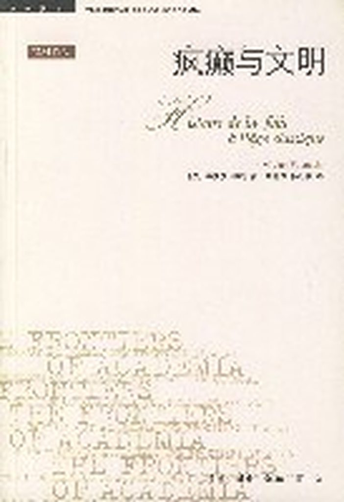
疯癫是文明定义的，在野外生活的人，食用地上的食物，喝河里的水，在山坡上毫无征兆地奔跑，都不会被视为疯癫。
将什么样的人划为疯癫进行隔离，是随着统治阶层的利益需要而动态变化的。
Learn PyTorch for Deep Learning- Zero to Mastery book
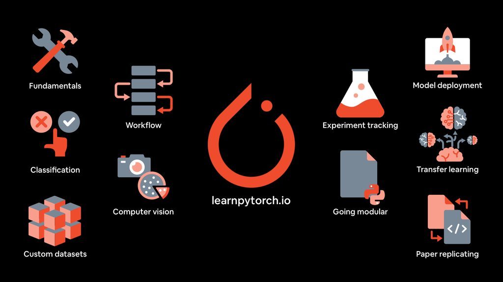
不错的实操教程
当我谈跑步时我谈些什么
An Introduction to Philosophical Analysis
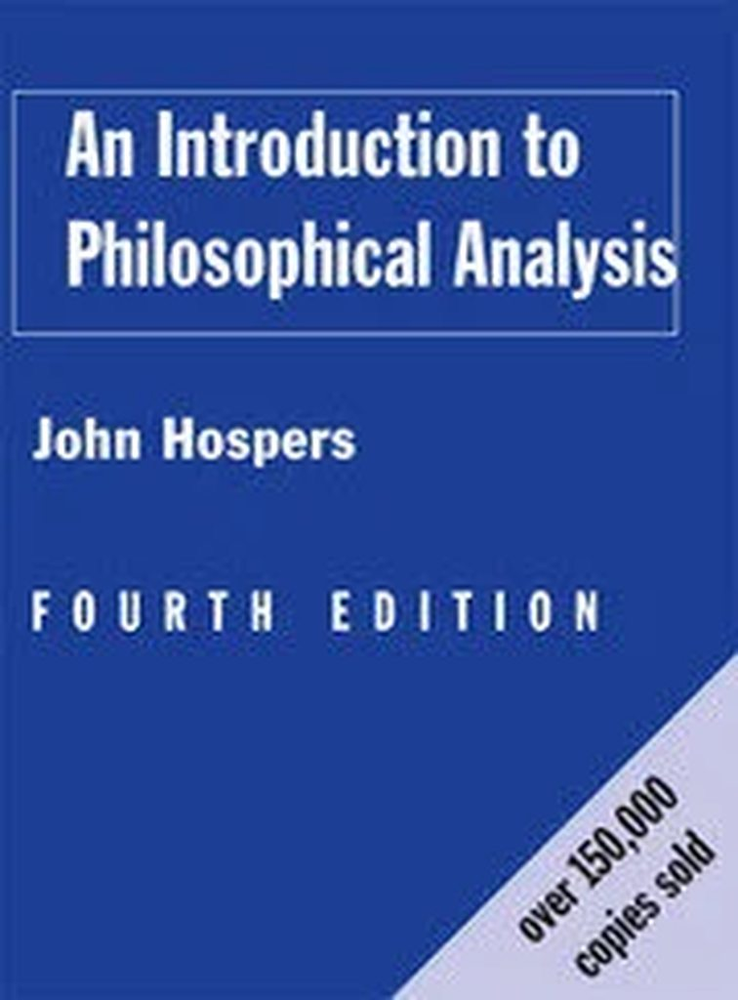
逃避自由
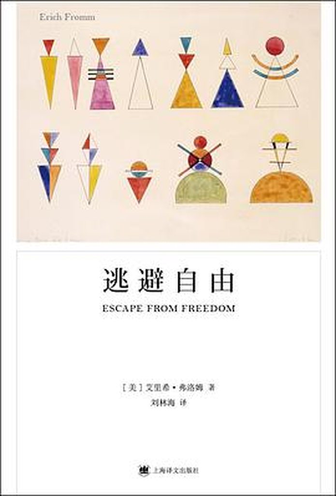
逃避自由 — [美]E.弗洛姆 & chenjin5.com — 2011 — cj5 — bc88b3f6b2e22f5b6f2c8a27a7d8ecc0 — Anna’s Archive.mobi (Highlight: 22; Note: 0)
───────────────
◆ 第一章 个人之出现与自由之暧昧
▪ 一方面人日渐地脱离外在权威而独立，而在另一方面，个人则日益感到孤立，结果，感到个人无足轻重与无权力。
◆ 第二章 宗教改革时期之自由
▪ 由于人失去了他在一个封闭社会中的固定地位，他也失去他生活的意义，其结果是，他对自己和对生活的目的感到怀疑。他遭到威力庞大的超人力量，资本及市场的威胁。由于每一个人都成为一个潜在的竞争者，人与他人的关系变成为敌对的和疏远的；他自由了，但这也就表示，他是孤独的、隔离的，受到来自各方面的威胁。
▪ 中产阶级的地位是处于极富与赤贫之间，这种地位使它的反应成为复杂的，而且在许多方面是矛盾的。他们想要支持法律与秩序，而同时，他们本身又受到日形重要的资本主义的威胁。即使是中产阶级中较成功的人，也不及一小群大资本家那么富裕和有权力。他们必努力奋斗以求生存，和求进展。财阀的奢华益加使中产阶级觉得渺小，和使他们充满嫉妒与反感。就整体而论，封建秩序的瓦解，和日形重要的资本主义者对中产阶级的威胁，多于对中产阶级的帮助。
▪ 路德对人的看法正反映了这种左右为难的情况。人解脱了一切使他必须服从精神权威的束缚（关系），但是这种自由也使他处放孤独与焦虑的状态中，使他觉得个人的不重要与无权力。
▪ 路德并不仅仅道出中产阶级的无价值的心情——他还为他们提供了解决办法。他的解决办法是：承认自己的无价值，极其能事地羞辱自己，完全地放弃个人意志，否认并且抨击人的个人的力量。
▪ 中世纪封建社会制度的瓦解，对社会各阶层，都具有一项重要的意义：个人受到冷落和孤立。他自由了。这种自由具有双重的结果。人失去了他以前曾享受到的安全感，失去了所属感，感到孤独与焦虑。但是，同时他也可以自由的作为和独立地思考，他成为自己的主人，可以按自己的能力来过生活——不必听命于他人。
◆ 第三章 现代人的两种自由观念
▪ 我们的目的乃是要显示出，现代社会的形态对于人们的影响同时产生了两种现象；一、他变得更自立自主，而且不满现实，喜爱批评。二、他也同时觉得更孤单无依，并产生一种惶恐不安的心理。
▪ 如今我们也已获得了自由的最后一项——言论自由，它虽然是我们在争取自由的奋战中的重要一役，但现代的人却完全不会利用它，终是人云亦云，毫无主见。也就是说，他根本没有独创我见而不受外界影响的能力。另外，虽然我们常引以为荣的是，我们已不再受要我们一意遵行的那些外在权势的控制，却忽视了具有同等权威的舆情与公众意识。
▪ 人类由于受到路德及加尔文教义的影响，在心理上的各种反映，就构成了现代社会的形态——，对于自己感到生命无意义。二、为本身以外的一切奉献自己。今天的人类，只是把过去一直是侍奉上帝的观念，转而为侍奉现代的经济制度而已，永远成为这个大机械的奴隶。
▪ 一般人工作之余，尽量参加社团活动，与外界建立各种社会关系，不断接触，尽情享乐，到处游历，而孤寂感暂时不会产生。然而，在心灵的深处，仍充满了空虚，恐惧，与孤寂感，迫使我们时时企图挣脱这种精神上的压力。而去争取新自由。
◆ 第四章 逃避的心理机构
▪ 虐待狂对于那些无害的被虐待者而言，他们最明显的理由就是，他们的行为常常是缺少意识但却很合理的，他们常以一种过分善意及过分关心他人的方式来掩饰其虐待行为，这种所谓合理的现象往往是：“我知道什么对你们最好，什么对你们最有益，所以你们应当绝对的服从我，让我来统治你们。”或者说：“因为我的各方面都好，唯我独尊，因此也就希望你们就要依靠我。”另外一种就是“我对你们作得太多了，现在我要从你们处拿回我所需要的。”最积极的虐待狂者通常有两种最常用的借口，“我曾经受过别人的害，现在我不过是以牙还牙——没有别的，只是报复。”或者“为了预防自己或我的朋友受到伤害起见，最好的办法就是打击对方。”经常被我们忽略而应该一提的是虐待狂与被虐待者之间的关系存在着一项要素，这个要素就是虐待者有依赖被他们虐待者的现象。
▪ 大多数的破坏现象是不被人们视作为破坏的，相反的，人们用各种方法，使这些破坏行为合理化。人们经常用爱、责任、良知、爱国主义等等字眼，来掩饰他们的破坏行为。
▪ 他们看起来，与他们的周围环境那么相似，以至于他们几乎和周围的环境，没有什么区别，一个人放弃了他独有的个性，变得和周围的人一模一样，便不再感到孤独和焦虑。
▪ 如果我们观察人们对于若干事情的意见时，我们常常可以发现到上述这种现象。比如说，我们向一般的报纸读者，请教对某一政治问题的看法时，“他的”意见其实就是他从报纸上看到的说法，然而，他却相信，他所说的乃是他自己思考的产物。
▪ 在现代社会中，个人自动与他人同一化的这种行为，使得个人益加觉得无助和不安。因此，他准备服从新的权威，因为新的权威给予他安全感，和使他解除怀疑。
◆ 第五章 自由与民主
▪ 由于情感不能完全的予以扼杀，人们就必须把情感与人格的知识一面加以分开；其结果是产生低级而不真实的多愁善感的情绪，电影与流行音乐便用这种情绪，来满足情感饥渴的顾客。
▪ 如果他们能在这种疯狂活动的当儿停下来想一想，他们便会想到这个问题：“如果我们真的获得了这项新工作，如果我有了这部比较好的汽车，如果我能去旅行——以后又怎样呢？做到了这些，又有什么用处呢？我是不是真的要这些东西？我是否在追寻某个目标，而这个目标假定会使我快乐，同时，当我一达到这个目标，它会令我困惑？
▪ 现代人在幻觉下
▪ 过活，他以为他知道需要什么，而他实际上想要的，是他以为应该要的东西。
▪ 一个演员在舞台上，可以卖力地扮演他被指派的角色。然而，无论他演得多么卖力，他只不过是扮演一个别人交给他的角色而已。人们难以认清我们的希望，不是真正地属于我们自己的，而是外界加诸于我们的，这种困难与权威及自由的问题，有密切关连。在现代史的过程中，教会的权威由国家的权威取而代之，国家的权威又由良知的权威取而代之，如今，良知的权威又由普通常识及舆论的匿名权威取而代之。
▪ 个人在现代社会中的孤立、无权力与不安全；个人解脱了一度使生命有意义及安全的所有束缚。我们也已发现，个人不能忍受这种孤立；孤立的人与外界相形之下，变得完全无助，因此，非常害怕外界；由于他的孤立处境，对他而言，世界已失去了统一性。他不知如何适应这个世界。于是，他开始怀疑自己，怀疑生命的意义，最后，怀疑任何行为的原则。无助与怀疑麻痹了生命；为了求生，人试图逃避自由。他不由自主地又套进新的枷锁。这种枷锁与原始的约束不同，原始的约束还能给他一种安全感，而逃避自由并不能使人们复得已失去的安全感，而仅能帮助他忘记他是独立的个体。他牺牲了他个人的自我的完整性，所得到的不过是不堪一击的安全感。因为他忍受不了孤独的滋味，他宁愿失去自我。因此，自由又使人再度套入新的枷锁中。
▪ 生命只有一个意义，那就是自发自动地生活。
Clean Code
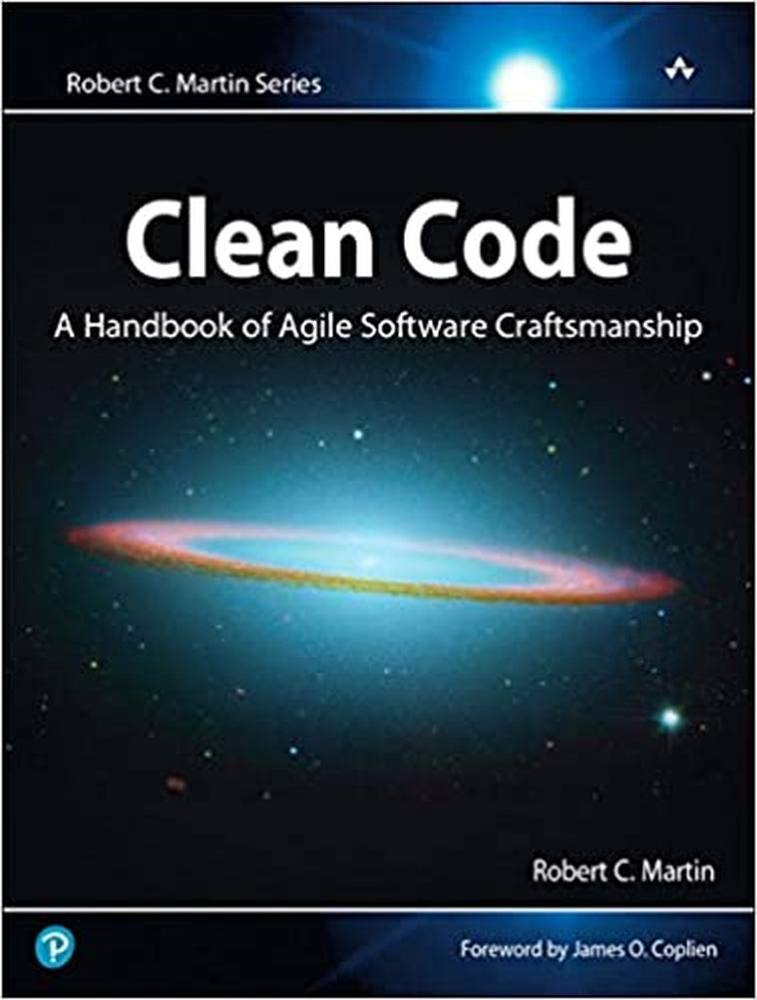
计算机专业缺失的课程
通往奴役之路
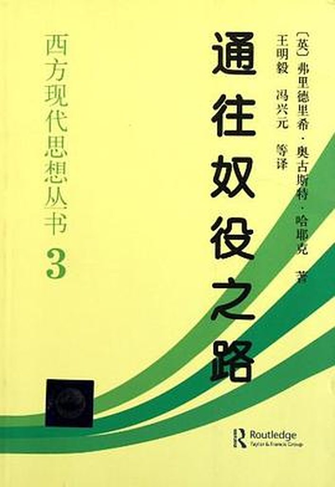
博尔赫斯诗选
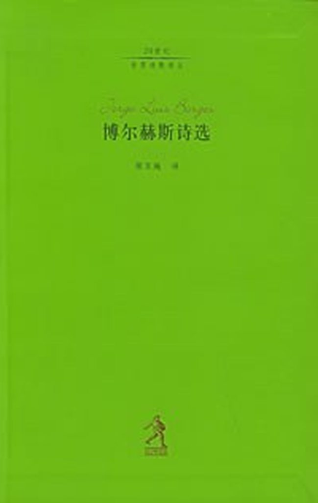
Debug Hacks
存在主义咖啡馆
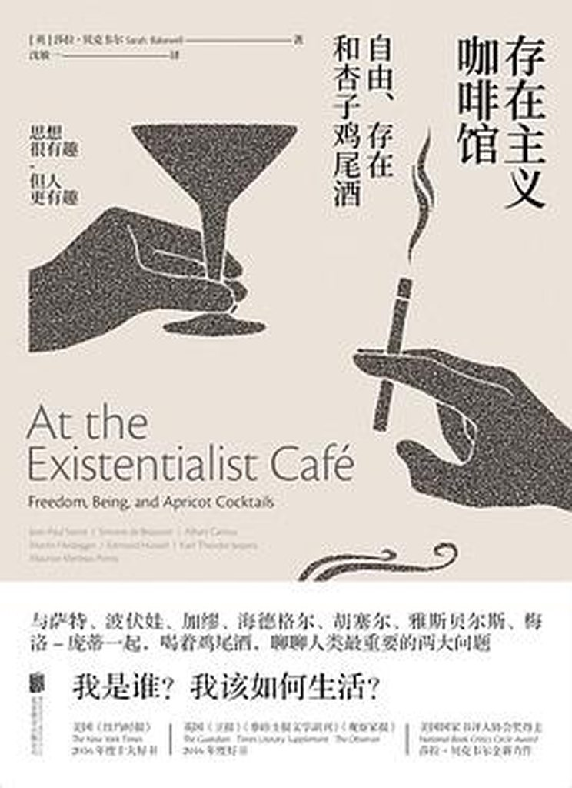
存在主义咖啡馆——自由、存在和杏子鸡尾酒 (未读·思想家) - 莎拉·贝克韦尔 (Highlight: 17; Note: 0)
───────────────
◆ 第二章 回到事物本身
▪ 身高只有一米五二的萨特，站在人群中想必都不易被看到，但他振奋人心地阐释了自己的思想，后来又以此写了一本书
◆ 第三章 来自梅斯基尔希的魔法师
▪ 你是自由的人，那就去选择吧——也就是说，去创造（invent）。”
◆ 第五章 嚼碎开花的扁桃树
▪ 一旦他开口说话，一旦他的学识抹去了他脸上的粉刺和浮肿，他丑陋的外表就消失了
◆ 第七章 占领，解放
▪ ——禁止“禁止”。——既没有上帝，也没有救世主。——别用“聪明”来形容一个人，要用自由或不自由。——请现实点儿：坚决要求不可能之事。
◆ 第九章 生平考述
▪ 我们发现，我们受监视和管控的程度已经非比寻常，我们的私人数据被拿去谋利，我们被提供着各类消费产品，但不被允许表达自己的想法或是做任何太具破坏性的事情，各种各样的事件也在不断提醒着我们，种族、性别、宗教和意识形态冲突其实根本没有结束。
◆ 注释
▪ 别想着向外求索；返回你自身。真理栖居于灵魂之中。
◆ 索引
▪ 她创造了“恶之平庸”（the banality of evil）这个短语，来描述个人道德意识的极端缺失。
▪ 他认为人是各种品质的混合体，并愿意把人们都往好处想，但她在年轻时，却把人类视为由“大量不值一提的人和一小群被上天选中的人
▪ 但在有危险的地方，亦生长着拯救的力量。
▪ 明白我们会受到环境的掣肘，但又要像一切真的都在我们掌控之中一样，继续追求我们的计划
▪ 朝鲜战争后，他得出了一个结论，我们需要从一个更长远的视角去理解历史。他再也不希望“事事都要参与，就好像是某种道德考验一样”——他把这种倾向描述为了自欺。
▪ 萨特曾经批评说，这种坚定的身份表态是一种自欺，因为这意味着一个人将他自己呈现为了一个固定不变的自我，而不是一种自由意识
▪ 一个蔬果零售商从公司的总部领到一块印着标准信息的告示牌，按要求，他要把它放在窗口，而他也这样做了，虽然他根本不在乎其信息，但他知道，如果他不这么做，接下来就可能会发生各种不便。
▪ 奥林匹亚成了一大片“供美国游客住宿的酒店”，搞得这里的风景都无法“释放其土地、海洋和天空中的希腊元素”
▪ 西蒙娜·德·波伏娃曾认为，人类的生活就是一出有关自由和偶然性的戏剧，无法言明、模棱两可。
▪ 虽然口头上会说这让人不安，但实际上我们却可能从中获得一种确证——因为这样的想法替我们省了事儿，让我们不必再有那种伴随着认为我们是自由之人，要为自己所做之事负责而来的存在焦虑。萨特把这称作自欺。
▪ 晰地揭示了技术的本质，其无限的连接性承诺要把整个世界都变成可存储和可利用的东西，但这样做的结果是，互联网抹去了事物的私密性和深度。存在主义咖啡馆存在主义咖啡馆
乌合之众
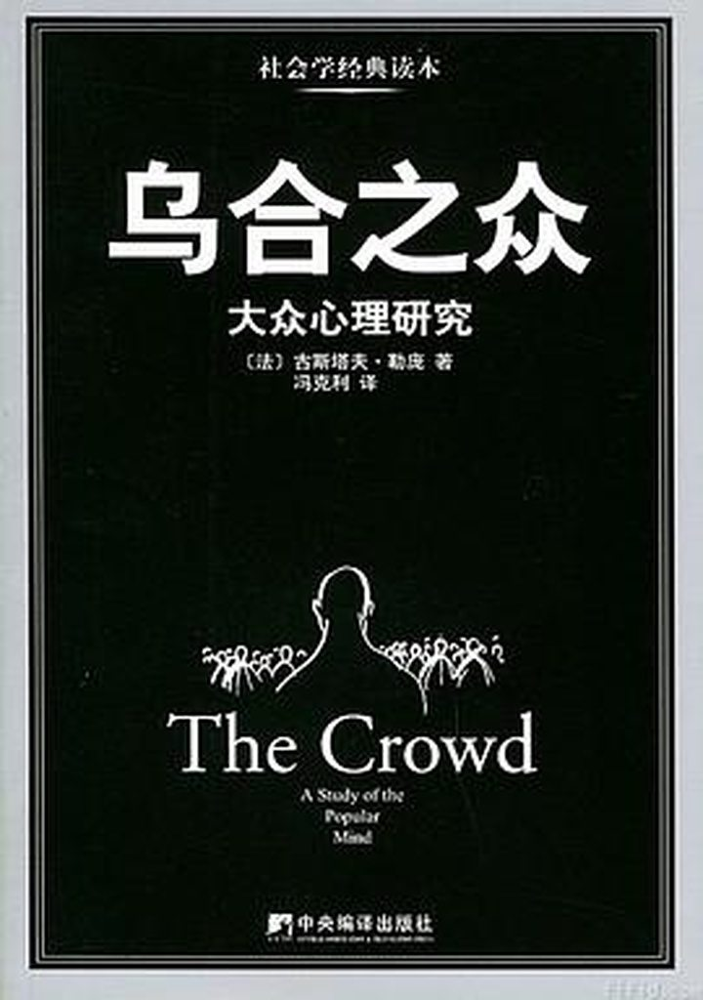
乌合之众：大众心理研究[人文精选] - [法] 勒庞 著，冯克利 译 (Highlight: 17; Note: 0)
───────────────
◆ 导 言 / 群体的时代
▪ 只有对群体心理有一定的认识，才能理解法律和制度对他们的作用是多么微不足道，才能理解除了别人强加于他们的意见，他们是多么没有能力坚持己见。要想领导他们，不能根据建立在纯粹平等学说上的原则，而是要去寻找那些能让他们动心的事情、能够诱惑他们的东西。
◆ 第一章 / 群体的一般特征
▪ 他很难约束自己不产生这样的念头：群体是个无名氏，因此也不必承担责任。这样一来，总是约束着个人的责任感便彻底消失了。
◆ 第二章 / 群体的感情和道德观
▪ 不管人们认为这一点多么无足轻重，群体通常总是处在一种期待注意的状态中，因此很容易受人暗示。最初的提示，通过相互传染的过程，会很快进入群体中所有人的头脑，群体感情的一致倾向会立刻变成一个既成事实。
▪ 那些在人类历史上发挥过重大作用的伟大人物，如赫拉克利特、释迦牟尼或穆罕默德，我们拥有一句真实的记录吗？我们极可能一句也没有。不过实事求是地说，他们的真实生平对我们无关紧要。我们想要知道的，是我们的伟人在大众神话中呈现出什么形象。打动群体心灵的是神话中的英雄，而不是一时的真实英雄。
▪ 在群体中间，傻瓜、低能儿和心怀妒忌的人，摆脱了自己卑微无能的感觉，会感觉到一种残忍、短暂但又巨大的力量。
▪ 希望感动群体的演说家，必须出言不逊，信誓旦旦。夸大其词、言之凿凿、不断重复、绝对不以说理的方式证明任何事情——这些都是公众集会上的演说家惯用的论说技巧。
◆ 第三章 / 群体的观念、理性与想象力
▪ 我们在前一本著作中研究群体观念对各国发展的影响时已经指出，每一种文明都是屈指可数的几个基本观念的产物，这些观念很少受到革新。
▪ 观念只有采取简单明了的形式，才能被群体所接受，因此它必须经过一番彻底的改造，才能变得通俗易懂。当我们面对的是有些高深莫测的哲学或科学观念时，我们尤其会看到，为了适应群体低劣的智力水平，对它们需要进行多么深刻的改造。
▪ 群体推理的特点，是把彼此不同、只在表面上相似的事物搅在一起，并且立刻把具体的事物普遍化。知道如何操纵群体的人，给他们提供的也正是这种论证。
▪ 影响民众想象力的，并不是事实本身，而是它们发生和引起注意的方式。如果让我表明看法的话，我会说，必须对它们进行浓缩加工，它们才会形成一种令人瞠目结舌的惊人形象。掌握了影响群众想象力的艺术，也就掌握了统治他们的艺术。
◆ 第一章 / 群体的意见与信念中的间接因素
▪ 教育既不会使人变得更道德，也不会使他更幸福；它既不能改变他的本能，也不能改变他天生的热情，而且有时——只要进行不良引导即可——害处远大于好处。
◆ 第二章 / 群体意见的直接因素
▪ 词语的威力与它们所唤醒的形象有关，同时又独立于它们的真实含义。最不明确的词语，有时反而影响最大。例如像民主、社会主义、平等、自由，等等，它们的含义极为模糊，即使一大堆专著也不足以确定它们的所指。
▪ 一切文明的主要动力并不是理性，倒不如说，尽管存在着理性，文明的动力仍然是各种感情——譬如尊严、自我牺牲、宗教信仰、爱国主义以及对荣誉的爱。
◆ 第四章 / 群体的信念与意见的变化范围
▪ 由于前者所提供的幸福理想只能实现于来世，这样就无法反驳它；而社会主义的幸福理想是要在现世得到落实，因而只要有人想努力实现这种理想，它的许诺的空洞无物立刻就会暴露无遗，从而使这种新信仰身败名裂。
◆ 第四章 / 选民群体
▪ 选民中的多数都是工人或农民，他们很少选出自己的同行来代表自己，原因就在于这种人在他们中间没有名望。
◆ 第五章 / 议 会
▪ 在追求理想的过程中，从野蛮状态发展到文明状态，然后，当这个理想失去优势时，走向衰落和死亡，这就是一个民族的生命循环过程。
◆ 代译后记 / 民主直通独裁的心理机制
▪ 群众的民主权力就像一切个人权力一样，当它没有受到恰当的宪政约束时，很容易转变为它的反面，成为一种暴虐的权力
What Dose It All Mean
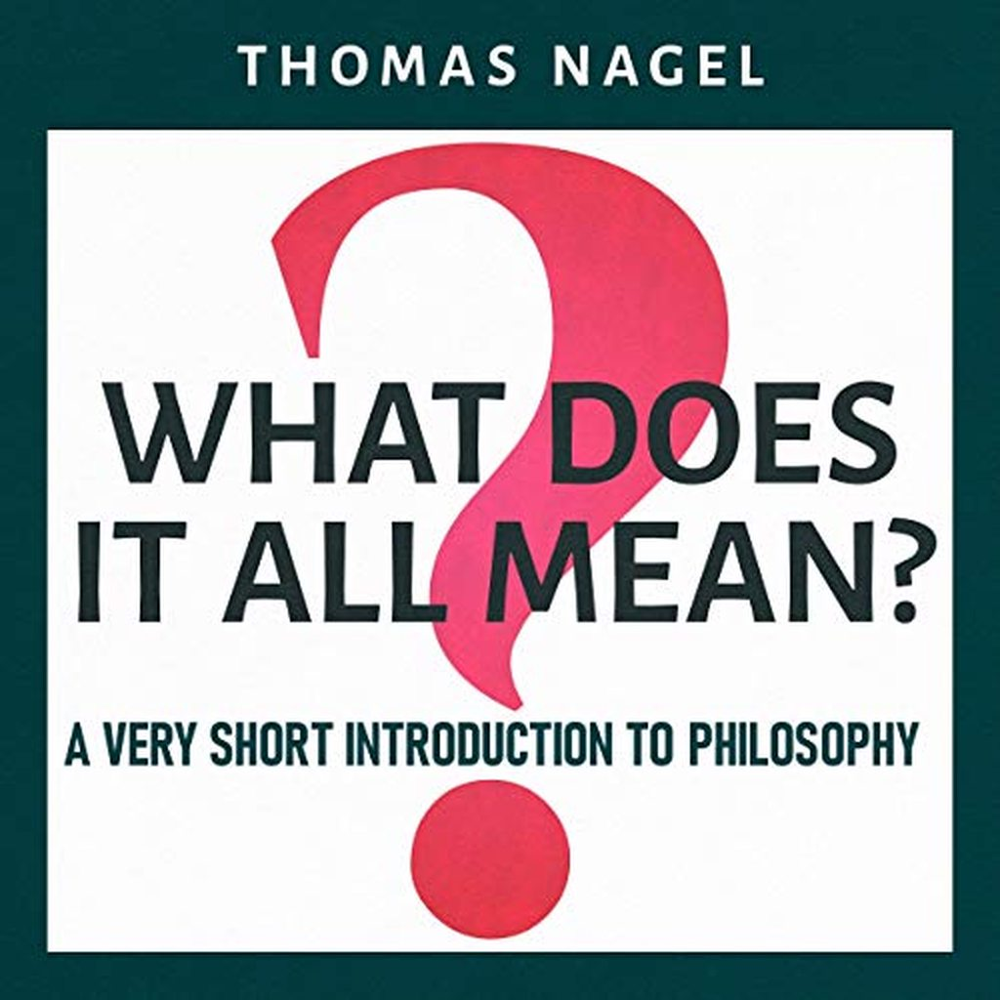
哲学是一种什么样的东西呢？
他和数学物理这些自然科学最大的不同，就是它不依赖于由书本记载的实验结果来传播。
就算那些问题没有在任何的媒介上留下资料，一代又一代的人总会不断的想起这些问题，思考这些问题，它就像刻在我们的基因里一样。
所以每一次发生群体性事件的时候，我总会听到这样的评论：你看那些人满嘴说的都是言论自由，民主法治，和西方反华势力的话术一模一样，肯定是收了黑钱的。
其实我刚开始听到这样的评论我也有些许的动摇，我很难相信在没有被境外势力资助的情况下会有这么多人共同提出这样的一些诉求，看完了这个句子我的疑惑终于解开了：虽然我们和西方人有着完全不同的文化背景，也很少有非常深入的沟通交流，但是我们脑袋里忽然就冒出了跟他们一样的想法，是因为这个想法早就已经刻在我们的基因里，就算没有任何媒体的传播, 我们也会不由自主地一遍遍想起，这是人的一种本能的需求。
瓦尔登湖
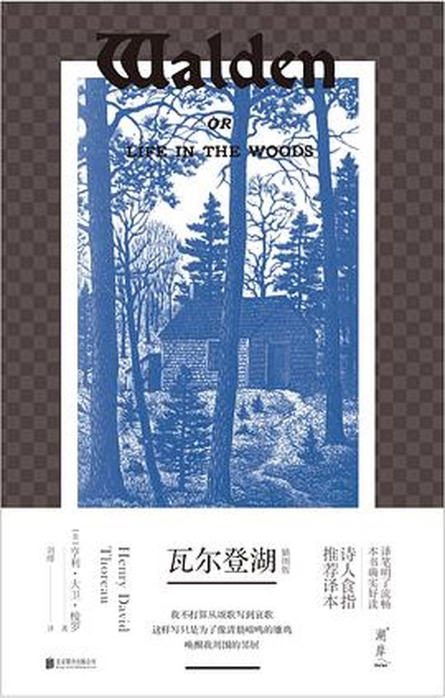
为了这个刘的翻译版本，我破例买了纸质书。
要我说这个梭罗也是个咬卵犟，思维混乱而固执
其实细想下来梭罗的思想是很有指导意义的。现在赛里斯年轻人总是抱怨生活压力大，但是仔细看他们的生活：租房子要租市中心Ins风的loft；抱怨房价贵但是买房子只看一线城市核心地区或者未来核心的住宅，看不上小产权和公寓/人才/回迁房；买车明明十万块的丰田就能解决全部出行需求，但是却要天天刷懂车帝，最后三五十万买个空有其表的入门奔驰，发小红书炫耀完了之后只剩下索然无味。
要想活得轻松最重要就是要将自己的生活必须精简到极致，我租房住可以只是一个睡觉的地方，足够放下一张床和一个书桌就可以，这样的要求在一线城市大约也就是不到一千元就足够了；吃饭可以吃城中村快餐，每餐饭十多元足够了，自己做饭成本也许更低；穿衣服可以买淘宝货，买迪卡侬，全身行头也很难超过500元。
我觉得梭罗坚持步行去旅行倒是跟我很像，在大城市生活，每天两点一线，不管过多久，不管是哪个城市，你对城市的记忆也不过就是由地铁和公交车的涂装和一个个离散的目的地构成，所以我在工作之初就拒绝了公共交通通勤，但是买车我又没有户口、牌照和停车位，所以我学了摩托车驾照计划去购买一辆摩托车上下班，最后没有实现，我退而求其次选择了自行车通勤。最近我想要减肥遏制一下自己的三高趋势，所以我开始尝试跑步 5Km 上下班。
DevOps实践指南
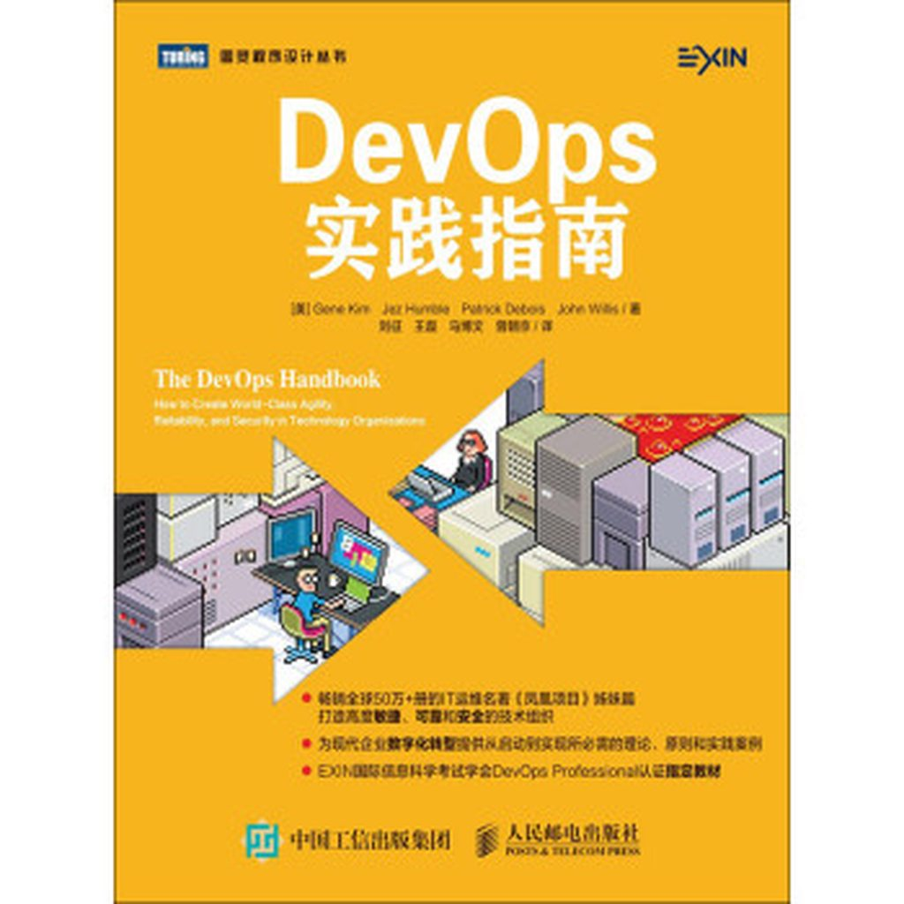
One Hundred Years of Solitude
惊呆了！ 哲学这么好

绝佳的哲学入门书籍
简单用图和几句话让读者对于某个哲学家有一个简单了解
西西弗神话
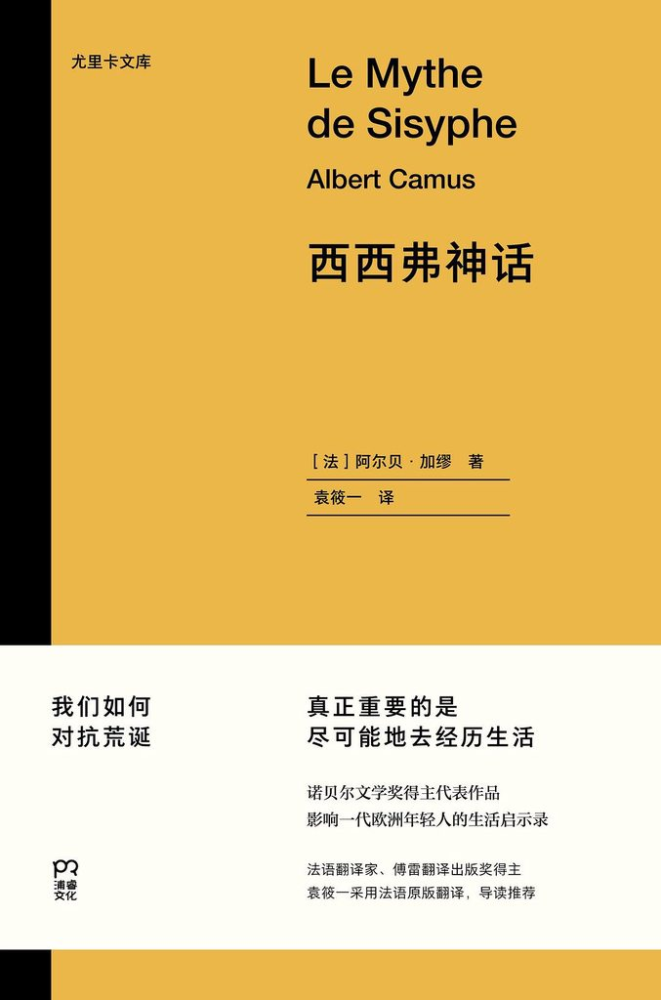
袁筱一译本
这本书可能需要反复的阅读，和我通常阅读的类型有很大的差异
读完以后记得的也只有只言片语，也只有那一些小小的引发共鸣的片段，而作者想要传达什么意思，我并不是很确切的知道。
一个疯子在浴缸里面钓鱼，医生走过来问他说：你能钓到吗，疯子对医生说：你疯了？浴缸里能钓到鱼吗？